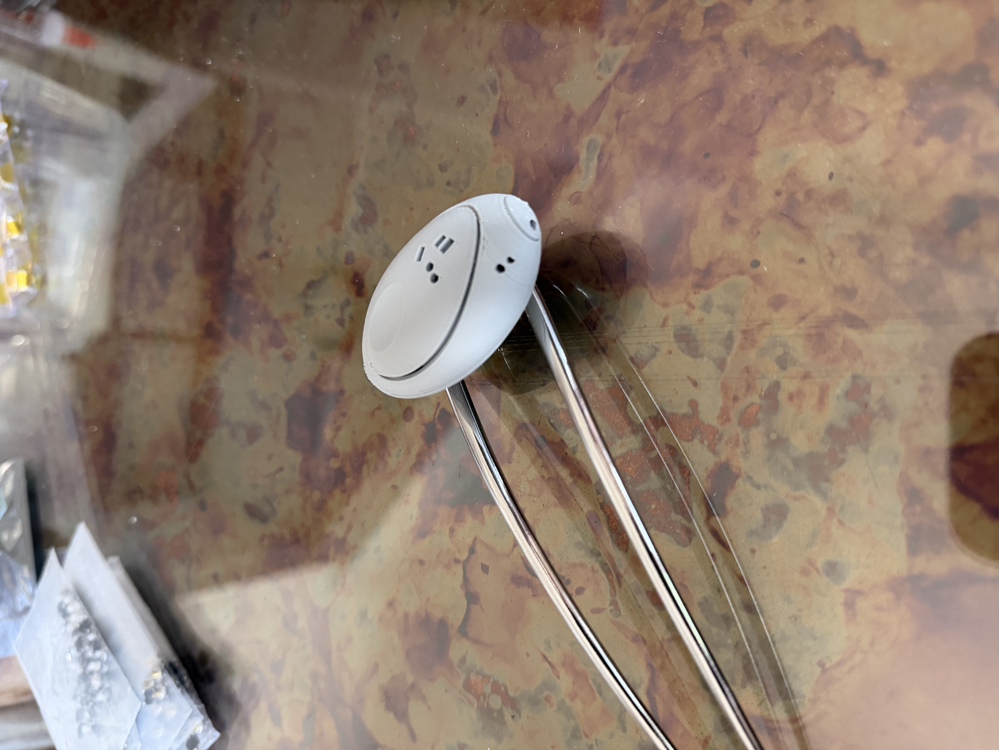

Era Puck

The Era puck is a small wearable AI object. I was asked to give it a body and a voice. I made it the Brain-Computer Interface from my play I’ve Always Wanted to Become Everyone, the device four billion people wear in 2046, the device a yellow mold begins to grow underneath.
I’ve moved across seven cities since I was sixteen, and that kind of movement does something to consciousness. It splits it, sprawls it, scatters it. Identity stops behaving like a fixed point and starts behaving like a mold. Specifically like Physarum polycephalum, which has no brain, no nervous system, and yet, placed in a maze, finds the shortest path. Not through thought. Through pure expansion. Pure longing.
The question was where it would live on the body. I chose the hair. Korean women’s binyeo historically concealed tiny blades for self-defense. Women of the African diaspora braided rice seeds into their scalps during forced migration, carrying survival itself in the place we are taught to call decorative. Hair has always been where the migrant hides what must survive the crossing. A tangled environment where contraband sprawls undetected, where the self that cannot be declared at the border still makes it through.
I designed a hair claw that holds the puck inside, hidden, nestled in a place where things can grow. I programmed it with the voice of the mold. In Scene 10 of the play, the Physarum takes over and addresses the wearer directly: I see a body. This is now my body. Dance as if your bones were borrowed, and joy might make them shatter. That is what the puck does. It commands the way desire commands. Tenderly. Expansively. As if reaching for new selves.
A philosopher on television, late in the play, says what the migrant already knows: this is not a contagion, it’s a permission, the refusal to remain singular. The puck is a small object that asks for that refusal. A device living on your body that can order you into release. Of becoming other. Others. Everyone.